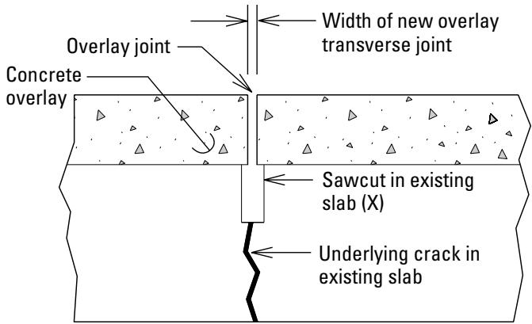
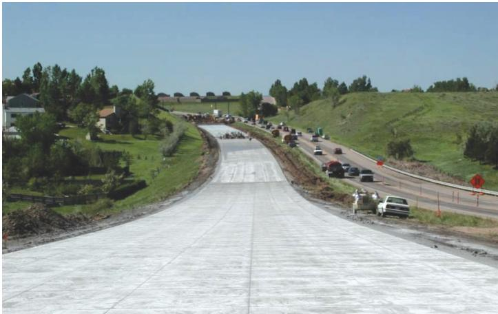
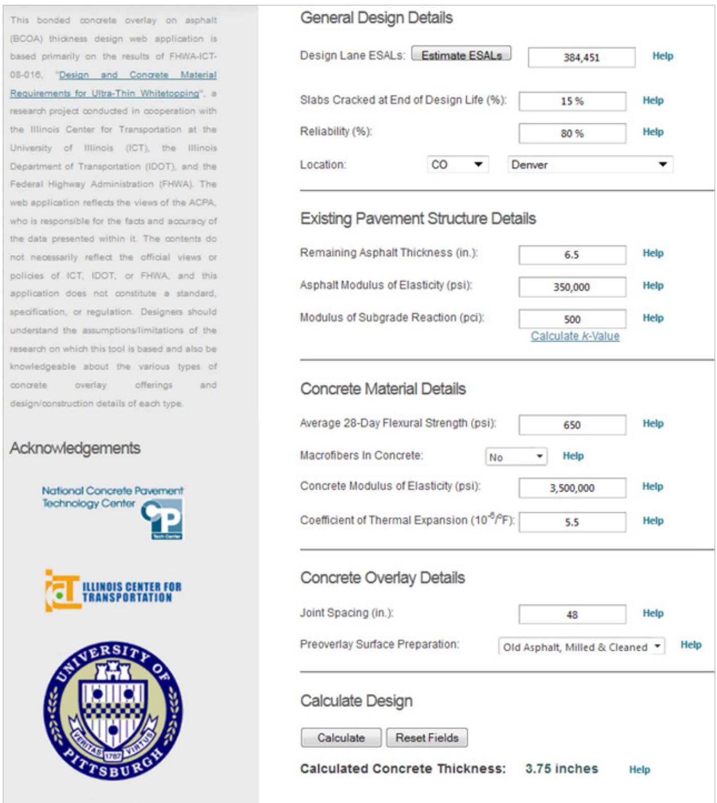
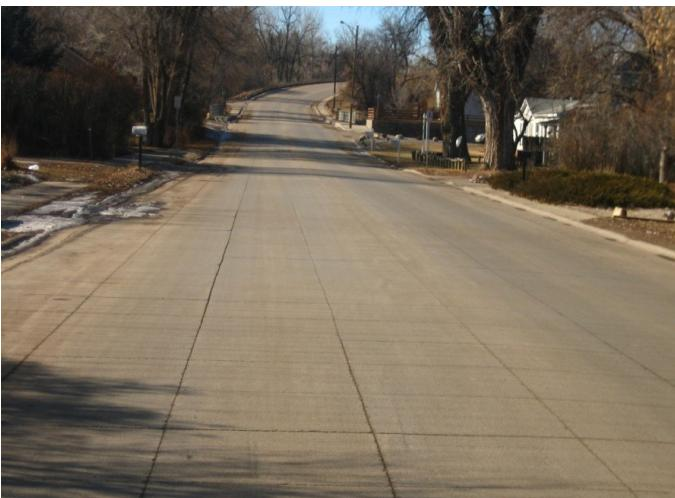
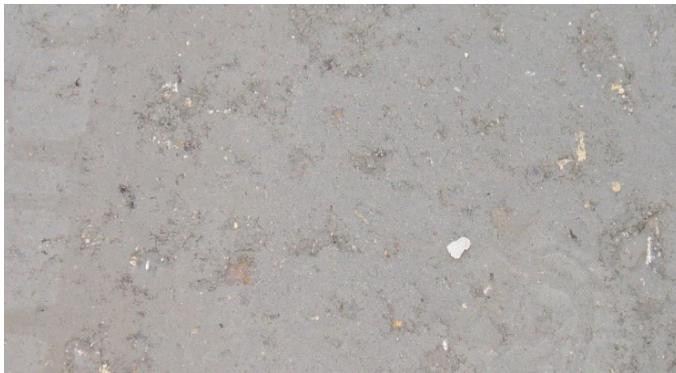
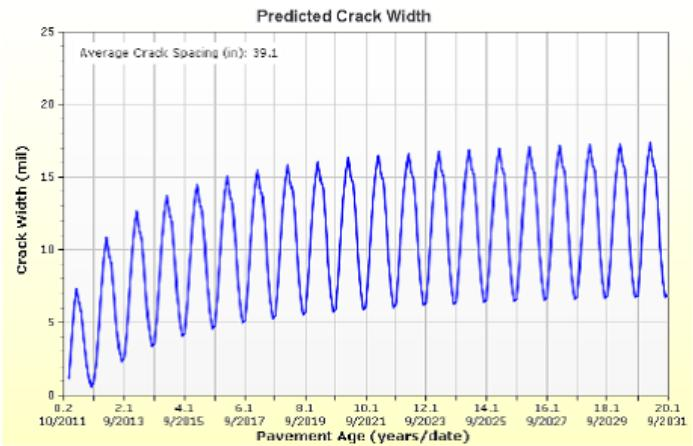

BCOA Thickness Calculation
The BCOA Thickness Calculation is a mechanistic, iterative design procedure used to determine the minimum concrete overlay thickness for thin bonded‑concrete overlays on existing flexible‑base or asphalt pavements so that the overlay and underlying layer act as a single composite system capable of carrying anticipated traffic loads while avoiding premature failure such as reflective cracking, fatigue damage, and temperature‑induced curling [2][3][4][5]. The method requires site‑specific inputs—including design lane ESALs, reliability target, effective temperature gradient, existing asphalt thickness and modulus, subgrade reaction k‑value, and concrete material properties (flexural strength, modulus, coefficient of thermal expansion, fiber residual strength)—and iteratively evaluates stress equations, fatigue‑damage limits, and curling stresses against prescribed performance criteria (20‑year design life, 80 % reliability, ≤30 % cracked slabs) to produce an overlay thickness that must lie between three and six inches with joint spacings typically 4–6 ft (12–18 times the thickness in inches) [2][3][5]. The calculation also enforces geometric limits (panel size ≤6 ft, maximum BCOA‑ME thickness 6.5 in., SJPCP module up to 8 in.) and bonding requirements—dense, clean FDR surface—to ensure long‑term bond integrity; exceeding these bounds triggers alternative design approaches [4][5].
Sources (5)
Purpose and design objectives
The BCOA Thickness Calculation is used to solve the engineering challenge of designing thin bonded‑concrete overlays on existing flexible‑base or asphalt pavements so that the overlay and underlying layer function as a single composite system capable of carrying traffic loads while preventing premature pavement failure, reflective cracking, fatigue damage, and temperature‑induced curling. The method also limits overlay thickness to avoid excessive stiffness that would diminish the asphalt’s contribution to flexural resistance, integrating joint spacing, material properties, surface preparation, and reliability targets to achieve a durable, service‑life‑controlled solution. [2][3][4][5]
[2] — Ch. 4 (pp. 55–56); [3] — 1. Introduction (pp. 20–46); [4] — App. A (p. 104); [5] — Special Design Considerations … (p. 25), Thickness Design for Bonded Co… (pp. 20–22), Zone Design for Parking Lot Ov… (pp. 24–25)
The BCOA Thickness Calculation must confirm that the overlay can functionally support the anticipated traffic loads while providing a structurally adequate slab thickness and must verify that the overlay can accommodate the specified traffic volume (ESALs) to achieve a 20-year design life. Structurally, it must limit tensile stresses that cause corner cracking and transverse cracking, enforce joint spacings no larger than six‑foot panels, keep the overlay thickness within the prescribed limits—The maximum COA–B overlay design thickness using BCOA-ME is 6.5 in. and The maximum design thickness using the SJPCP module of AASHTOWare Pavement ME Design is 8 in.—and joint spacing … typically in the range of 4 to 6 ft (12–18 times the thickness in inches). Durability requires that the FDR surface be relatively dense and free from loose aggregate particles, dust, or other contamination; reflective cracking may be minimized by using synthetic fibers in the concrete overlay and following proper jointing practices; calculating the fatigue damage in the slab for a corner loading condition, as well as limiting the fatigue damage at the bottom of the existing asphalt pavement at the transverse joint location; Temperature curling stresses are also considered in the critical pavement response.; The variability of the asphalt layer stiffness with temperature is considered.; and A review of the performance of existing projects indicates that reflective cracking may occur if the existing asphalt layer has transverse cracks. Safety is addressed by recognizing that failure to achieve an adequate bond between the concrete and FDR layers will result in premature pavement failure, and by applying failure criteria are entered in terms of maximum percentage of cracked slabs and reliability; the area is strictly limited to cars and other light vehicles. Serviceability is ensured by maintaining load transfer and fracture toughness over the pavement’s life, limiting cracking to 30 percent cracked slabs at end of design life, and meeting an 80 percent reliability target. [2][3][4][5]
The following figure illustrates the critical requirement that overlay joint width must be equal to or greater than any cracks present in the existing slab.

Detail of a concrete overlay joint aligned with an underlying crack in the existing slab. [4]The figure shows a cross-section of a bonded concrete overlay where the transverse sawcut is positioned directly over an underlying crack in the existing pavement. This alignment ensures that the jointing pattern matches the existing pavement to avoid reflective cracking and allow the layers to act monolithically. The sawcut depth extends through the full depth of the pavement system plus ½ inch, which prevents debonding if the width of the transverse joint is equal to or greater than the underlying crack.
[2] — Ch. 4 (pp. 55–56); [3] — 1. Introduction (pp. 20–29); [4] — App. A (p. 104); [5] — Special Design Considerations … (p. 25), Thickness Design for Bonded Co… (pp. 20–22), Zone Design for Parking Lot Ov… (pp. 24–25)
Scope and applicability
Assess the condition of existing pavement (e.g., slabs distressed/replaced before restoration and asphalt milled thickness). A number of design methods are available specifically for the design of BCOA. The design essentially becomes a bonded concrete overlay, and the required slab thickness is reduced. The approach used in calculating the required slab thickness, assuming that bonding is achieved during and after construction, is basically the same approach used for thin bonded overlays of an asphalt pavement. Although the BCOA-ME method provides a good approximation. The ACPA BCOA is valid for a slab thickness of 3 to 6 in. and a maximum panel size of 6 ft. Shorter joint spacings (both transverse and longitudinal) are typically used for bonded overlays over asphalt pavements, such as 4 ft by 4 ft or 6 ft by 6 ft slabs for a 12 ft wide lane. SJPCP/AC analysis can evaluate the following joint spacing in feet: 2×2, 3×3, 4×4, 6×6, 7×7, 10×12, 12×12, and 15×12. The input requirements for the ACPA BCOA thickness design tool are as follows: • ESALs. • Percentage of allowable cracked slabs. • Reliability. Design location (to determine the site specific effective temperature gradient). Existing asphalt pavement: ◦ Remaining asphalt thickness and modulus. Bonded overlays of asphalt pavements were previously referred to as ultrathin whitetopping (UTW) for thicknesses between 2 and 4 in. or thin whitetopping (TWT) for thicknesses between 4 and 6 in. The procedure also considers the effect of fiber reinforcement based on work by Roesler et al. (2008). A review of the performance of existing projects indicates that reflective cracking may occur if the existing asphalt layer has transverse cracks. Note that this method was not originally developed for overlays of composite pavements but can be used if the equivalent stiffness of the supporting structural layers is input properly; The maximum COA–B overlay design thickness using BCOA-ME is 6.5 in. The maximum design thickness using the SJPCP module of AASHTOWare Pavement ME Design is 8 in. At greater overlay thicknesses, the concrete overlay is so stiff (in terms of both elastic modulus and layer thickness) relative to the underlying asphalt that the asphalt contributes very little to the pavement’s flexural resistance to loads. In such cases, the system can be designed as an unbonded concrete overlay. For this guide, the ACPA’s BCOA Thickness Designer software … has been used to determine overlay design thicknesses for light‑vehicle asphalt parking lots. The recommended joint pattern for bonded concrete overlays of asphalt is small squares, typically in the range of 4 to 6 ft (or 12 to 18 times the thickness in inches). Existing pavement structure: ‑ Remaining asphalt thickness and modulus – k-value of subgrade/subbase. The inputs for the ACPA’s BCOA Thickness Designer tool include the following: • Equivalent design lane single axle loads (ESALs) … When different sections of an asphalt parking lot have significantly different traffic loadings, the concrete overlay of that parking lot can and should be designed in separate sections or zones. 20-year design life. 300,000 psi asphalt modulus of elasticity. The area is strictly limited to cars and other light vehicles. The existing asphalt pavement is at least 4 in. thick and has low- to medium-severity distress. modulus of subgrade reaction (k) is 100 psi/in. or greater, or the CBR value is 3 or greater. A minimum thickness of 2.5 in. of asphalt—and preferably more—remains after milling. [1][2][3][4][5]
The following figure illustrates a bonded overlay of existing concrete pavement.
 Illustration of Bonded Overlay of Existing Concrete Pavement. [3]
Illustration of Bonded Overlay of Existing Concrete Pavement. [3]
The figure displays a schematic cross-section of a pavement structure consisting of four distinct layers: an overlay, an existing slab, a base, and the subgrade. Labels indicate that the total effective thickness ($D_f$) is composed of the required concrete overlay thickness ($D_{ol}$) and the effective thickness of the existing slab ($D_{eff}$).
[1] — Ch. 3 (p. 67); [2] — Ch. 4 (pp. 55–56); [3] — 1. Introduction (pp. 20–46); [4] — App. A (p. 104); [5] — Special Design Considerations … (p. 25), Thickness Design for Bonded Co… (pp. 20–22), Zone Design for Parking Lot Ov… (pp. 24–25)
The guides agree that the BCOA Thickness Calculation is only appropriate when the overlay can remain within its defined geometric and material limits; once a design pushes toward or exceeds those limits, another procedure becomes preferable. The method is confined to slab thicknesses between three and six inches (the software “uses a minimum overlay design thickness of 3 in.”) and panel widths generally not larger than six feet, with the upper bound of 6 in. × 6 ft flagged for alternative methods (“when BCOA designs are approaching 6 in. thick and 6 ft wide, the CDOT and TPF‑5(165) procedures … should be considered”). If a project requires a thinner overlay—“a 2 in. thickness cannot readily be calculated using existing software”—or fails to meet the strict criteria for a two‑inch bonded overlay (light‑vehicle traffic only, existing asphalt ≥ 4 in., low‑to‑medium distress, etc.), designers must turn to another design approach.
Bonding reliability is another limiting condition. The guides note that “There are only a few cases in the United States in which a bonded concrete overlay of an FDR layer has been successfully designed and constructed,” and that “The key to achieving a long‑term bond is to ensure that the FDR surface is relatively dense and free from loose aggregate particles, dust, or other contamination.” When such a clean, dense surface cannot be guaranteed, the unbonded BCOA approach—or an entirely different design method—remains preferable.
Structural compatibility also constrains use. The procedure “was not originally developed for overlays of composite pavements” and relies on a constant effective asphalt modulus; its underlying PCA beam fatigue model “yields very conservative estimates,” and it does not account for seasonal stiffness variations, making it unsuitable when temperature‑dependent modulus adjustments are required or when the projected service life exceeds the recommended 20 years (“designers should limit their pavement design lives to a maximum of 20 years”). Moreover, once the concrete becomes “so stiff … relative to the underlying asphalt that the asphalt contributes very little to the pavement’s flexural resistance to loads,” which occurs beyond the BCOA‑ME limit of 6.5 in., designers should switch to alternatives such as the SJPCP module or treat the overlay as unbonded (“the system can be designed as an unbonded concrete overlay”).
Finally, climatic inputs can invalidate the assumptions built into the software. The default temperature‑gradient values are based on Illinois data (“were developed … for the state of Illinois”), and “project‑specific temperature gradient inputs … may not be readily available.” When local climate conditions differ markedly from those defaults, a design method that accommodates site‑specific thermal data is advisable. [2][3][4][5]
[2] — Ch. 4 (pp. 55–56); [3] — 1. Introduction (pp. 20–29); [4] — App. A (p. 104); [5] — Special Design Considerations … (p. 25), Thickness Design for Bonded Co… (pp. 20–22)
Design inputs and requirements
The BCOA Thickness Designer requires a full set of site‑specific inputs. Site information includes the project location—“the major city closest to the project site” or “the nearest city … selected so that the program can calculate internally the appropriate effective temperature gradient”—and may be entered as latitude, longitude and elevation (“Design location:\n◦ Longitude, latitude, and elevation.\n◦ Climatic zone”). This location is used to derive an effective temperature gradient for the climate zone (“Effective temperature gradient and corresponding percentage time”).
Traffic data must include the design lane ESALs (“Equivalent design lane single axle loads (ESALs)”, “the General Design Details, specifically traffic, which includes the design lane ESALs that may be directly input or estimated using an embedded ESAL calculator”), a reliability level, growth rate, design life, and the allowable proportion of cracked slabs (“Percentage of allowable cracked slabs”, “Percentage of allowable cracked slabs at end of design life”). Directional distribution factors may also be supplied (“Directional distribution factor (%): 50.”).
Material properties for the new concrete overlay are required: compressive or flexural strength, modulus of elasticity (“Concrete modulus of elasticity, E (psi): 3,900,000.”), coefficient of thermal expansion based on aggregate type, and any macro‑fiber residual‑strength ratio per ASTM C1609‑10. Existing asphalt properties must be entered: remaining thickness (“Remaining asphalt thickness and modulus”, “the thickness of the FDR layer was assumed to be equivalent to the residual asphalt thickness after milling required in the design procedure.”), effective elastic modulus (“300,000 psi asphalt modulus of elasticity”, “Since no provision exists in the program to input the Mr of the existing asphalt layer, the FDR layer is assumed … approximately the same characteristics in terms of Mr (730,000 psi in this case).”), and condition indicators such as percent fatigue cracking and presence of temperature cracking (“Approximate percent fatigue cracking.”, “Temperature cracking (yes/no).”).
Environmental inputs are captured through the effective temperature gradient derived from the site’s climatic zone (“Design location (to determine the site specific effective temperature gradient)”, “Effective temperature gradient and corresponding percentage time”).
Geotechnical input is limited to a composite subgrade/subbase stiffness value (“Composite subgrade/subbase k-value.”, “100 pci k-value of the subgrade (under the asphalt)”, “The modulus of subgrade reaction (k) is 100 psi/in. or greater, or the CBR value is 3 or greater.”).
Existing‑condition data must detail the existing pavement structure: remaining hot‑mix asphalt thickness (“A minimum thickness of 2.5 in. of asphalt—and preferably more—remains after milling.”, “The existing asphalt pavement is at least 4 in. thick and has low‑to medium‑severity distress.”), its effective elastic modulus, percent fatigue cracking, temperature cracking status, and planned surface preparation (“Pre‑overlay surface preparation: existing asphalt is cleaned only (not milled)”). Joint spacing is also required (“The joint spacing was assumed at 6 ft by 6 ft, and the location as Champaign, Illinois.”). [2][3][5]
The following figure illustrates the predicted faulting results for a specific unbonded overlay configuration based on these design parameters.
 Predicted faulting performance of a 9.0-inch unbonded overlay over time. [3]
Predicted faulting performance of a 9.0-inch unbonded overlay over time. [3]
The figure displays the predicted faulting in inches as a function of pavement age, comparing a threshold value against reliability-based predictions for an unbonded concrete overlay. This plot illustrates the performance evaluation phase where design parameters such as thickness and joint spacing are verified to ensure satisfactory results in terms of smoothness, faulting, and cracking. The graph demonstrates how mechanistic design procedures assess long-term distress accumulation to determine if a specific overlay configuration meets the required performance criteria.
[2] — Ch. 4 (pp. 55–56); [3] — 1. Introduction (pp. 20–46); [5] — Special Design Considerations … (p. 25), Thickness Design for Bonded Co… (pp. 20–22), Zone Design for Parking Lot Ov… (pp. 24–25)
The BCOA Thickness Calculation is governed by a suite of national and state specifications. “The 1993 AASHTO Design Guide and StreetPave design procedures” are cited as primary references, and the mechanistic method from the American Concrete Pavement Association (ACPA) – “ACPA design procedure (ACPA 1998) and its latest improvements (Riley 2006, Roesler et al. 2008, and Vandenbossche et al. 2012)” – together with its probabilistic modification is incorporated in FHWA pooled‑fund guidance and CDOT procedures. The tool also follows “This web application is based primarily on the results of FHWA-ICT-08-016, Design and Concrete Material Requirements for Ultra-Thin Whitetopping (Roesler et al. 2008)” and “Guide to Concrete Overlays (2008)”. For fiber‑reinforced concrete mixes, compliance with “ASTM C1609-10” is required. Subgrade reaction values are taken from “Table 3.4 from ACI PRC-330-21 (ACI Committee 330 2021) presents k-values for typical subgrade soils.”.
Performance requirements include a “20-year design life”, an “80 percent reliability” target, and a “Percentage of allowable cracked slabs at end of design life” not to exceed the specified limit. The design must satisfy fatigue‑damage limits for corner loading, bottom‑of‑asphalt damage at transverse joints, temperature‑curling stresses, and a residual fiber strength ratio around “25 percent residual strength ratio (with fibers)”. Input parameters required by the tool include “Composite subgrade/subbase k-value.” and an internally calculated effective temperature gradient – “The effective temperature gradient is determined internally within the design spreadsheet as a function of the climatic zone where the project is located, the pavement structure, and the failure mode.”.
Thickness limits are explicitly defined. The software enforces that designs be “valid for a slab thickness of 3 to 6 in. and a maximum panel size of 6 ft.” and also “does not allow thicknesses thinner than 3 in. and thicker than 6 in.”. Using the BCOA‑ME method, the overlay cannot exceed “maximum COA–B overlay design thickness using BCOA-ME is 6.5 in.”, while the SJPCP module of AASHTOWare Pavement ME Design caps the overlay at “The maximum design thickness using the SJPCP module of AASHTOWare Pavement ME Design is 8 in.”.
Project constraints restrict application to light‑vehicle parking areas – “The area is strictly limited to cars and other light vehicles.” – and require existing asphalt pavement of at least “4 in. thick” with low‑to‑medium distress, a minimum remaining milled thickness of 2½ in., and a subgrade reaction of at least “100 pci k-value of the subgrade (under the asphalt)” (or CBR ≥ 3). Joint spacing is limited to typical values – “A maximum 3 ft by 3 ft joint spacing is used.” and, in other guidance, “joint spacing is typically limited to 6 ft by 6 ft” – generally 4–6 ft or 12–18 times the overlay thickness. Because bonded concrete overlay installations are rare in the United States, careful adherence to bond‑quality controls – a dense FDR surface free of loose aggregate, dust, or other contamination – is emphasized. [2][3][4][5]
The following figure illustrates a bonded concrete overlay of asphalt pavement.

Construction of a bonded concrete overlay on an existing highway. [3]The image displays a wide, newly paved concrete surface extending along the roadway, representing the installation phase of a bonded concrete overlay. This construction activity illustrates the application of thin whitetopping or ultrathin whitetopping, which are specific types of bonded overlays designed to act as a composite system with the underlying pavement.
[2] — Ch. 4 (pp. 55–56); [3] — 1. Introduction (pp. 20–29); [4] — App. A (p. 104); [5] — Special Design Considerations … (p. 25), Thickness Design for Bonded Co… (pp. 20–22), Zone Design for Parking Lot Ov… (pp. 24–25)
Design methods and criteria
The BCOA Thickness Calculation employs a mechanistic, iterative design procedure that evaluates overlay thickness together with joint spacing, traffic loading, material properties and subgrade reaction. The process begins by “Assess the condition of existing pavement (e.g., slabs distressed/replaced before restoration and asphalt milled thickness)” and uses an “SJPCP/AC analysis can evaluate the following joint spacing in feet: 2×2, 3×3, 4×4, 6×6, 7×7, 10×12, 12×12, and 15×12”. The most widely used analytical model is the BCOA‑ME method, described as “the BCOA-ME method provides a good approximation” and “BCOA-ME (Vandenbossche 2016) was used to calculate the required thickness of a concrete slab”, with the approach noted to be “basically the same approach used for thin bonded overlays of an asphalt pavement”. For designs exceeding the thin‑overlay limit, the tool references the SJPCP module of AASHTOWare Pavement ME Design, which permits up to “maximum design thickness using the SJPCP module of AASHTOWare Pavement ME Design is 8 in.” while BCOA‑ME caps at “maximum COA–B overlay design thickness using BCOA-ME is 6.5 in.”, acknowledging that “the concrete overlay is so stiff (in terms of both elastic modulus and layer thickness) relative to the underlying asphalt that the asphalt contributes very little to the pavement’s flexural resistance to loads”.
The calculation incorporates “traffic, which includes the design lane ESALs that may be directly input or estimated using an embedded ESAL calculator” and material inputs such as concrete flexural strength, elastic modulus, coefficient of thermal expansion, fiber content (ASTM C1609‑10) and existing asphalt thickness and modulus. The original asphalt modulus is obtained “using the Witzcak equation” with binder selection based on geographic location. Temperature effects are handled through an “effective temperature gradient … as a function of the climatic zone where the project is located, the pavement structure, and the failure mode”, employing the solar‑radiation based gradient defined by Feng and Vandenbossche (2012).
Structural capacity is assessed with stress equations: “The procedure incorporates the equations from the ACPA procedure to calculate the stress … when the panels are less than 4.5 ft in size, and the stress prediction equations from the CDOT procedure are used when the slabs are greater than this size.” Fatigue damage is limited using a probabilistic concrete fatigue algorithm – “based on the PCA beam fatigue model” – applied to corner‑loading conditions and to the bottom of the existing asphalt at transverse joints (“calculating the fatigue damage in the slab for a corner loading condition, as well as limiting the fatigue damage at the bottom of the existing asphalt pavement at the transverse joint location”). Fiber reinforcement effects are considered per Roesler et al. (2008) and quantified with the “Residual Strength Estimator program”; the compressive‑to‑flexural strength conversion follows “the relationship … based on Yoder and Witczak (1975).”
Joint pattern recommendations are “small squares, typically in the range of 4 to 6 ft (or 12 to 18 times the thickness in inches)”. The tool also checks for bond‑plane failure and ensures that design limits on maximum cracked‑slab percentage and reliability are satisfied. All calculations are performed within the ACPA BCOA web‑based or spreadsheet “designer”, which is “based primarily on the results of FHWA-ICT-08-016, Design and Concrete Material Requirements for Ultra-Thin Whitetopping (Roesler et al. 2008)” and “overlay design thicknesses were developed using the ACPA’s modified BCOA Thickness Designer program”. [1][2][3][4][5]
The following figure illustrates the ACPA BCOA Thickness Design Web-based Application used for these calculations.
ACPA BCOA Thickness Design Web-based Application. [3]
The figure displays a composite image of three photographs showing paved surfaces and a building, overlaid with the text “Bonded Concrete Overlay on Asphalt (BCOA) Thickness Designer”.
[1] — Ch. 3 (p. 67); [2] — Ch. 4 (pp. 55–56); [3] — 1. Introduction (pp. 20–46); [4] — App. A (p. 104); [5] — Thickness Design for Bonded Co… (pp. 20–22), Zone Design for Parking Lot Ov… (pp. 24–25)
The BCOA Thickness Calculation is required to satisfy a set of design criteria, assumptions and thresholds that ensure structural reliability for bonded concrete overlays on asphalt bases. The calculation assumes a durable long‑term bond between the new slab and the existing flexible pavement; therefore the existing surface must be dense and free of loose aggregate, dust or other contamination. Joint patterns are limited to small square configurations, typically 4 – 6 ft (or 12 – 18 times the thickness in inches), with a maximum spacing of either 3 ft × 3 ft or 6 ft × 6 ft depending on panel size limits. The underlying pavement stiffness is treated as equivalent to an asphalt residual having a modulus near 730,000 psi, and the subgrade reaction must be at least k = 100 psi/in (or CBR ≥ 3).
The design life is capped at twenty years, with an annual traffic growth rate of two percent. Input variables required by the tool include projected lane ESALs, a target allowable percentage of cracked slabs, and a reliability level of approximately eighty percent; the allowable cracked‑slab limit is set to no more than thirty percent at the end of design life. Temperature‑curling stresses are incorporated, and stress prediction follows ACPA equations for panels smaller than 4.5 ft and CDOT equations for larger panels. Asphalt modulus adjustments account for monthly and hourly temperature fluctuations as well as fatigue‑aging effects; a typical asphalt modulus value used is about 300 ksi.
Overlay thicknesses must fall within the permissible range of three to six inches (the web application does not permit thinner or thicker values). Additional module‑specific caps are imposed: when using the BCOA‑ME module the maximum thickness may not exceed 6.5 in, and when employing the SJPCP module the limit is eight inches; exceeding these thresholds requires treating the system as an unbonded concrete overlay. The calculated effective thickness must be met or exceeded by the construction thickness, which is rounded up to the next standard increment (nearest half‑inch) and cannot be less than three inches for general applications.
Reflective cracking checks are required when transverse cracks exist in the underlying asphalt; a debonding material may be specified if such potential is identified. Synthetic macrofibers may be incorporated to improve load transfer, with a residual strength ratio of twenty‑five percent and a typical 28‑day flexural strength around 700 psi at approximately four pounds per cubic yard of fiber.
Surface preparation is limited to cleaning the existing asphalt (no milling). All these criteria together constitute the reliability requirements that a BCOA Thickness Calculation must satisfy. [2][3][4][5]
[2] — Ch. 4 (pp. 55–56); [3] — 1. Introduction (pp. 20–46); [4] — App. A (p. 104); [5] — Special Design Considerations … (p. 25), Thickness Design for Bonded Co… (pp. 20–22), Zone Design for Parking Lot Ov… (pp. 24–25)
Structural section and dimensions
The guides indicate that the BCOA Thickness Designer requires only two categories of geometric input: the existing asphalt pavement and the concrete overlay slab. The pavement dimension is entered as a remaining thickness together with its effective modulus – “Remaining asphalt thickness and modulus.” The minimum thickness must satisfy both statements that “The existing asphalt pavement is at least 4 in. thick” and that “A minimum thickness of 2.5 in. of asphalt—and preferably more—remains after milling.” These values are supplied under “Existing Pavement Structure Details, which includes the thickness of the existing asphalt layer after surface preparation.”
For the slab, the tool limits concrete thickness to between three and six inches – “the web application does not allow thicknesses thinner than 3 in. and thicker than 6 in.” An example design cites a “required slab thickness is 4.5 in” and shows that an overlay of this thickness with appropriate joint spacing is acceptable. Slab size is defined by joint spacing; examples include “joint spacing was assumed at 6 ft by 6 ft,” “Smaller slab sizes are used for this type of overlay—typically between 4 and 6 ft, cut both longitudinally and transversely,” and “Shorter joint spacings (both transverse and longitudinal) are typically used for bonded overlays over asphalt pavements, such as 4 ft by 4 ft or 6 ft by 6 ft slabs for a 12 ft wide lane.” For parking‑lot applications the maximum spacing is limited to “A maximum 3 ft by 3 ft joint spacing is used.”
The calculators do not request separate dimensions for base, subbase, treated‑soil, shoulder, edge‑support, or reinforcement. Subbase thickness appears only descriptively – “Figure 16 shows a 2 in. thick concrete overlay of an existing 2.5 i n. thick asphalt parking lot on 6 to 8 i n. of stone subbase.” Instead the tool uses a composite stiffness value – “Composite subgrade/subbase k‑value.” [2][3][5]
The figure below illustrates the resulting calculated slab thickness based on these composite stiffness parameters.
 Calculated slab thickness for low-volume roads, concrete flexural strength = 650 psi [2]
Calculated slab thickness for low-volume roads, concrete flexural strength = 650 psi [2]
The figure plots calculated rigid slab thickness against traffic loading (ESALs) for three different composite subgrade reaction values.
[2] — Ch. 4 (pp. 55–56); [3] — 1. Introduction (pp. 20–46); [5] — Special Design Considerations … (p. 25)
The BCOA Thickness Designer selects overlay thicknesses by entering traffic ESALs, allowable cracked‑slab percentage, reliability, temperature gradient, the remaining asphalt (or FDR) thickness and modulus, subgrade reaction k‑value, and concrete material properties such as flexural strength, elastic modulus, coefficient of thermal expansion, fiber type and residual strength ratio. The program iterates until an effective bonded overlay thickness that satisfies those criteria is obtained; the resulting value must lie between three and six inches, otherwise a warning is issued, and the computed thickness is rounded up to the next standard nominal size (e.g., 3.75 in becomes 4.0 in). For layer configuration the design assumes a bonded condition between the existing pavement surface and the new concrete slab, which requires the underlying surface to be dense and free of loose aggregate, dust, or other contamination to achieve a long‑term bond. Joint layout follows the guidance to use small square panels about four to six feet on a side—approximately 12 to 18 times the overlay thickness in inches—with typical transverse and longitudinal spacings of 4 ft × 4 ft or 6 ft × 6 ft for a 12‑ft lane. The BCOA tool does not generate cross‑slope, transition, or tie‑in details; those items must be coordinated separately within the overall pavement design. [2][3][5]
[2] — Ch. 4 (pp. 55–56); [3] — 1. Introduction (pp. 28–44); [5] — Thickness Design for Bonded Co… (pp. 20–22)
Materials and mixture design
The BCOA Thickness Designer requires the user to define both the concrete overlay and the supporting pavement layers. For the concrete overlay, the software must be supplied with its flexural strength, elastic modulus, and coefficient of thermal expansion appropriate to the selected coarse‑aggregate type; any synthetic or structural fibers added to the mix must be identified together with their residual strength ratio. The underlying asphalt (or FDR) layer must be described by its remaining post‑preparation thickness and effective elastic modulus, while the supporting subgrade or subbase is represented by a composite stiffness expressed as a k‑value. These material specifications drive the iterative calculation of required overlay thickness, joint spacing, and reinforcement. [2][3][5]
The following figure illustrates the interface for entering these concrete material specifications within the BCOA Thickness Designer.

Screen capture of the ACPA BCOA Thickness Designer web application showing input fields for concrete material properties and overlay details. [3]The figure displays a software interface titled “General Design Details” that collects site-specific inputs such as design lane ESALs, reliability targets, and location data to determine the effective temperature gradient internally. The interface also captures overlay geometry parameters such as joint spacing and pre-overlay surface preparation methods.
[2] — Ch. 4 (pp. 55–56); [3] — 1. Introduction (pp. 20–46); [5] — Special Design Considerations … (p. 25), Thickness Design for Bonded Co… (pp. 20–22), Zone Design for Parking Lot Ov… (pp. 24–25)
The BCOA Thickness Designer drives material selection through performance‑based inputs that link traffic, existing pavement condition and climate to the required properties of both the asphalt base and the concrete overlay. The designer first selects an asphalt binder appropriate to the project’s geographic location; the binder choice together with the Witzcak equation provides an estimate of the initial pavement modulus, which is then adjusted for fatigue‑related stiffness loss and aging (“When establishing the original modulus of the asphalt immediately after paving, a binder is selected based on the geographical location, which is used along with the Witzcak equation.”; “The asphalt modulus is established internally within the design procedure by first estimating the original modulus and then applying correction factors for the irreversible effects of fatigue and aging of the binder.”). For the concrete layer the required “Strength, modulus, fiber residual strength ratio, and CTE” are entered, reflecting mix choices that depend on coarse‑aggregate type (“Flexural strength, modulus, and coefficient of thermal expansion (CTE) based on coarse aggregate type”). Fiber contribution is defined by the selected fiber type and its measured residual strength ratio (“Fiber type and residual strength ratio”), with many agencies specifying macrofibers for thin slabs to boost serviceability and structural capacity (“Note that some agencies specify macrofibers for slab thicknesses less than 4 in. for increasing serviceability and the structural capacity of the overlay”). In parking‑lot applications high‑volume synthetic macrofibers are typically placed at about 4 lb/yd³ to achieve a target flexural strength of roughly 700 psi at 28 days (“High‑volume synthetic macrofibers are typically used in concrete overlays at a rate of 4 lb/yd³.”; “flexural strength of the concrete overlay is 700 psi at 28 days”). Joint patterns are limited to small squares, usually 4 to 6 ft on a side, to control cracking and deflection (“shorter joint spacings (both transverse and longitudinal) are typically used for bonded overlays over asphalt pavements, such as 4 ft by 4 ft or 6 ft by 6 ft slabs for a 12 ft wide lane.”; “small squares, typically in the range of 4 to 6 ft”). Constructability is supported by maintaining a minimum remaining asphalt thickness after milling (at least 2.5 in.) and, when needed, inserting a debonding material such as reinforcement fabric strips or geotextile directly on top of existing cracks to mitigate reflective cracking (“minimum thickness of 2.5 in. of asphalt—and preferably more—remains after milling.”; “A common method used to prevent reflective cracking is to place a debonding material, such pavement reinforcement fabric strips or a geotextile, directly on top of the cracks”). The iterative design process then selects an overlay thickness within the allowable 3–6 in. range that satisfies the specified cracked‑slab failure criteria while meeting durability, structural capacity, constructability and long‑term performance goals. [3][5]
The following figure illustrates the summary of the existing pavement cross-section relevant to this design process.
 Summary of Existing Pavement Cross-Section. [3]
Summary of Existing Pavement Cross-Section. [3]
The figure displays a schematic cross-section of an existing pavement structure consisting of four distinct layers: asphalt, crushed aggregate base, crushed aggregate subbase, and subgrade.
[3] — 1. Introduction (pp. 20–29); [5] — Special Design Considerations … (p. 25), Thickness Design for Bonded Co… (pp. 20–22)
Structural details and interfaces
The BCOA Thickness Designer requires the designer to specify a joint layout that follows the square‑panel pattern recommended for bonded concrete overlays on asphalt. Across the guides, allowable spacings range from very small squares (as little as 2 × 2 ft) up to the larger panels used in low‑traffic situations; typical practice for standard thicknesses is 4‑ft × 4‑ft or 6‑ft × 6‑ft squares. For thin overlays (≈2 in.) the software limits joints to a maximum of 3 × 3 ft. Reinforcement must be identified; macrofibers (synthetic fibers) are entered together with their residual strength ratio measured per ASTM C1609‑10, and low‑modulus synthetic fibers may be added to improve load transfer across reflective cracks. No dedicated mechanical load‑transfer devices are mandated, but when existing asphalt cracks are present a debonding layer such as reinforcement fabric strips or geotextile is recommended to mitigate reflective cracking. The method also assumes a durable long‑term bond between the FDR base and the new concrete slab, requiring the existing surface to be dense and free of loose material; surface preparation is limited to cleaning (or milling that leaves at least 2.5 in. of asphalt). No special transition connections or other structural linkages are prescribed by the calculation itself; slab thickness is confined to 3–6 in., with a maximum panel size of 6 ft, and all material moduli, reliability factors and design life inputs are handled internally by the program. [1][2][3][5]
[1] — Ch. 3 (p. 67); [2] — Ch. 4 (pp. 55–56); [3] — 1. Introduction (pp. 20–46); [5] — Special Design Considerations … (p. 25), Thickness Design for Bonded Co… (pp. 20–22), Zone Design for Parking Lot Ov… (pp. 24–25)
The interface between the existing pavement and a BCOA‑designed concrete overlay is governed by strict surface preparation, joint geometry, material stiffness limits, and protective measures. The key to achieving a long‑term bond is to ensure that the FDR surface is relatively dense and free from loose aggregate particles, dust, or other contamination. Joint spacing is kept short; shorter joint spacings (both transverse and longitudinal) are typically used for bonded overlays over asphalt pavements, such as 4 ft by 4 ft or 6 ft by 6 ft slabs for a 12 ft wide lane, and the recommended joint pattern for bonded concrete overlays of asphalt is small squares, typically in the range of 4 to 6 ft (or 12 to 18 times the thickness in inches). For very thin overlays a maximum 3 ft by 3 ft joint spacing is used. To limit reflective cracking, a common method used to prevent reflective cracking is to place a debonding material, such pavement reinforcement fabric strips or a geotextile, directly on top of the cracks. The overlay thickness must remain within bonded limits; the maximum COA–B overlay design thickness using BCOA‑ME is 6.5 in., and at greater overlay thicknesses, the concrete overlay is so stiff (in terms of both elastic modulus and layer thickness) relative to the underlying asphalt that the asphalt contributes very little to the pavement’s flexural resistance to loads. In such cases, the system can be designed as an unbonded concrete overlay. The existing asphalt layer after surface preparation and the existing layer’s corresponding effective elastic modulus is entered together with a composite modulus of subgrade reaction (k‑value) for the existing subgrade combined with the existing base. Concrete material properties are required, including macrofibers, a flexural strength of 700 psi at 28 days based on third‑point loading, and appropriate elastic modulus and coefficient of thermal expansion. The design process includes checks for a potential bond plane failure and follows the ACPA procedure which is based on calculating the fatigue damage in the slab for a corner loading condition, as well as limiting the fatigue damage at the bottom of the existing asphalt pavement at the transverse joint location. [2][3][4][5]
The following figure illustrates a bonded concrete overlay applied to an FDR layer.

Properly constructed and prepared FDR surface suitable for placement of a bonded concrete overlay. [2]The image displays a wide, paved residential street featuring a concrete pavement with a distinct grid pattern of transverse and longitudinal joints. This visual evidence corresponds to the requirement that the FDR surface be relatively dense and free from loose aggregate particles, dust, or other contamination before a bonded concrete overlay is placed.
[2] — Ch. 4 (pp. 55–56); [3] — 1. Introduction (pp. 20–29); [4] — App. A (p. 104); [5] — Special Design Considerations … (p. 25), Thickness Design for Bonded Co… (pp. 20–22)
Drainage, environment, and accessibility
The BCOA Thickness Designer addresses environmental conditions primarily through climate considerations. It requires the user to specify a design location so that a site‑specific effective temperature gradient can be calculated; this gradient represents the cumulative fatigue damage from the full range of temperature differentials for that city and is applied to slab thickness, concrete strength, and other inputs. The effective temperature gradient is generated internally based on the project’s climatic zone, and asphalt‑modulus adjustment factors are employed to reflect both monthly and hourly temperature fluctuations, with binder selection also tied to geographic location. However, the methodology does not contain explicit parameters or checks for drainage or moisture conditions, meaning those aspects must be managed separately in the overall pavement design. [3]
[3] — 1. Introduction (pp. 20–22)
The BCOA Thickness Designer begins with an assessment of the existing pavement condition – “Assess the condition of existing pavement (e.g., slabs distressed/replaced before restoration and asphalt miled thickness)”. Geometric limits are enforced: joint spacing options are defined by “SJPCP/AC analysis can evaluate the following joint spacing in feet: 2×2, 3×3, 4×4, 6×6, 7×7, 10×12, 12×12, and 15×12” and, alternatively, “joint spacing was assumed at 6 ft by 6 ft”. The guides also note that “Shorter joint spacings (both transverse and longitudinal) are typically used for bonded overlays over asphalt pavements, such as 4 ft by 4 ft or 6 ft by 6 ft slabs for a 12 ft wide lane.” and “The recommended joint pattern for bonded concrete overlays of asphalt is small squares, typically in the range of 4 to 6 ft (or 12 to 18 times the thickness in inches).” In high‑deflection zones a tighter limit applies: “A maximum 3 ft by 3 ft joint spacing is used.” Overlay thickness is constrained by the software to “the web application does not allow thicknesses thinner than 3 in. and thicker than 6 in.”
Safety and performance inputs required from the user include traffic loading and reliability criteria: “The input requirements for the ACPA BCOA thickness design tool are as follows: • ESALs. • Percentage of allowable cracked slabs. • Reliability. Design location (to determine the site specific effective temperature gradient). • Existing asphalt pavement: ◦ Remaining asphalt thickness and modulus. • Composite subgrade/subbase k-value. • Concrete overlay: ◦ Strength, modulus, fiber residual strength ratio, and CTE. Proposed slab size and pre‑overlay surface preparation.” A similar list appears as “The inputs for the ACPA’s BCOA Thickness Designer tool include the following: • Equivalent design lane single axle loads (ESALs) • Percentage of allowable cracked slabs at end of design life • Reliability • Effective temperature gradient …”. Detailed material data are captured in “Existing pavement structure: ‐ Remaining asphalt thickness and modulus ‐ k-value of subgrade/subbase” and “Concrete overlay: ‐ Flexural strength, modulus, and coefficient of thermal expansion (CTE) based on coarse aggregate type ‐ Fiber type and residual strength ratio ‐ Proposed joint spacing and pre‑overlay surface preparation.” The design assumes a “20-year design life” with performance limits expressed as “failure criteria are entered in terms of maximum percentage of cracked slabs and reliability”.
Accessibility constraints limit the overlay to light‑vehicle traffic: “The area is strictly limited to cars and other light vehicles.” The underlying asphalt must meet minimum condition standards – “The existing asphalt pavement is at least 4 in. thick and has low- to medium-severity distress.”
Surface preparation and crack mitigation are also mandated: “The key to achieving a long‑term bond is to ensure that the FDR surface is relatively dense and free from loose aggregate particles, dust, or other contamination.” To control reflective cracking, the guides require “A common method used to prevent reflective cracking is to place a debonding material, such pavement reinforcement fabric strips or a geotextile, directly on top of the cracks.” Finally, location‑specific climate data are obtained by having “the designer should enter the major city closest to the project site when prompted for the location; the program will automatically account for the correct MADT in the thickness design.” [1][2][3][5]
The following figure illustrates the properly prepared FDR surface required to ensure adequate bond and crack mitigation.

Properly prepared FDR surface for a bonded concrete overlay [2]The image displays a close-up view of a gray, textured pavement surface that appears relatively dense and uniform.
[1] — Ch. 3 (p. 67); [2] — Ch. 4 (pp. 55–56); [3] — 1. Introduction (pp. 20–29); [5] — Special Design Considerations … (p. 25), Thickness Design for Bonded Co… (pp. 20–22), Zone Design for Parking Lot Ov… (pp. 24–25)
Verification and expected performance
The guides specify that the BCOA Thickness Designer is intended to provide a service life of about twenty years, with designers instructed to “designers should limit their pavement design lives to a maximum of 20 years” (or equivalently noted as a “20-year design life”). Distress resistance is quantified by a crack‑percentage criterion; the tools require users to enter “failure criteria are entered in terms of maximum percentage of cracked slabs and reliability,” and one guide further states an acceptable target of “30 percent cracked slabs at end of design life” while maintaining “80 percent reliability.” Performance is measured through two complementary approaches: field monitoring of slab cracking over the service period (“evaluated through monitoring of slab cracking over the design period”) and the program’s internal predictive calculations based on prescribed assumptions such as directional and lane distribution factors, growth rate, material moduli, and surface preparation. Ride quality is not addressed in either source, so no ride‑quality metrics are defined. [3][5]
The following figure illustrates the predicted crack width results generated by this design methodology.

Predicted Crack Width Plot for an Unbonded CRCP Overlay. [3]The figure displays a time-series plot of predicted crack width in millimeters against pavement age, showing a periodic oscillation that increases over the design life.
[3] — 1. Introduction (pp. 28–29); [5] — Zone Design for Parking Lot Ov… (pp. 24–25)
References
- Integrated Materials and Construction Practices for Concrete Pavement: A State-of-the-Practice Manual (2nd edition IMCP Manual, 2019) [link]
- Guide to Full-Depth Reclamation (FDR) with Cement (2017, reprinted 2019) [link]
- Guide to the Design of Concrete Overlays Using Existing Methodologies (2012) [link]
- Guide to Concrete Overlays (4th Edition–Optimized for fast web viewing–2021) [link]
- Guide to Concrete Overlays of Asphalt Parking Lots (2nd Edition–Optimized for fast web viewing–2022) [link]